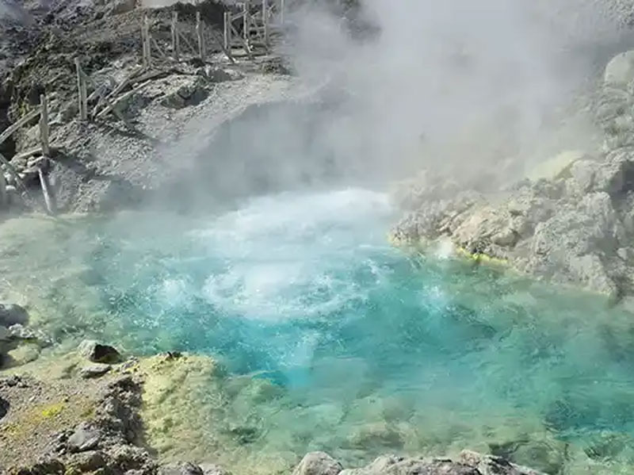
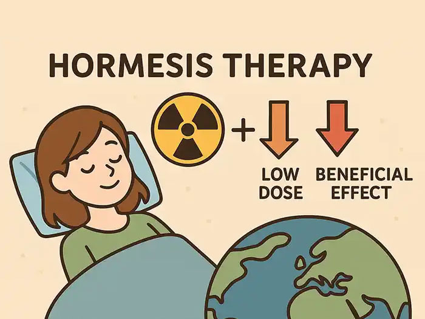
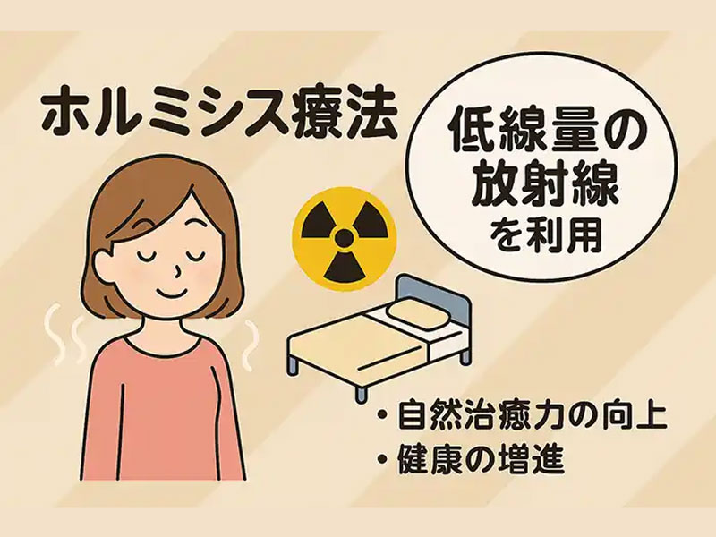
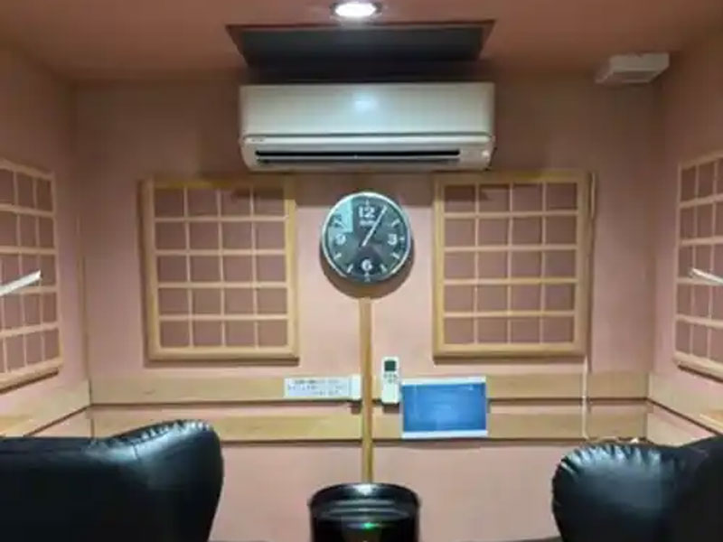

自然の力を活かした革新的健康アプローチ
ホルミシスとは？
地球上は自然放射線に満ち溢れ、私達は日常生活で微量の放射線を浴びています。
放射線は大量に浴びるとDNAにダメージを与えて問題が起こり、ひどい場合には健康に重大な影響を与えることがあります。
しかし、自然放射線の10〜100倍程度の低線量放射線については、一部の研究で生体機能に対して肯定的な影響が期待される可能性が示唆されています。

「放射線」＝「悪いもの」ではないのです！
ラドン温泉の不思議
日本各地には数多くのラドン温泉があります（玉川温泉〈秋田県〉、増富温泉〈山梨県〉、三朝温泉〈鳥取県〉など）。このラドン温泉での湯治を体験した一部の利用者からは、健康維持やリラクゼーションの実感が得られたとの声が報告されています。
- ラドンの大元は、ラジウムと言う放射線物質です。
- ラドン温泉の例が示しているように、低線量放射線がもたらす影響については健康分野での研究が進められています。
ホルミシスの効果


活性酸素の除去
遺伝子の修復
DNAの修復
血流の巡りサポート
免疫機能のバランス調整
自律神経の調整サポート
大量ではリスクとなるものが、微量の場合には逆に体内の調整をサポートする働きを持つことがあるとされています。微量の放射線についても、体に刺激を与えることにより、生体機能のバランスを整える働きが期待されています。
まるで「ホルモン」のような働きを示すことから、「ホルミシス」という言葉が生まれました。低線量放射線による生体への影響を指して、『ホルミシス』と呼ばれることがあります。
ホルミシスの期待される作用
- 活性酸素除去酵素（SOD、GPx）の働きをサポートし、体内の活性酸素のバランスを整えることが期待されています。
- DNAの自己修復機能をサポートし、体のダメージ軽減に寄与する可能性が示唆されています。
- 約160種類のホルモンの働きを促進し、体調のバランスをサポートすることが期待されています。
- 鎮痛作用や自律神経の調整、血糖値の調整サポートが期待される場合があると考えられています。
ホルミシスルーム
ホルミシスルーム沖縄は、玉川温泉や三朝温泉のラドン浴を人工的に再現しました。
- ノーマルルーム、スーパールームの2つの部屋があります。
微粉砕したラジウム鉱石「ラドンストーン」を壁面に配置しています。
ラドンガスが放出される設計で、遠赤外線や天然石の成分、微細な水素が含まれた空気が室内に広がるよう工夫されています。
服を着たままリラクゼーションを目的とした空間利用ができるのが特徴です。

ホルミシスルームのマイナスイオン測定値
スーパールーム
11,586
ノーマルルーム
2,783
ホルミシスルームの外
10
整体（施術）
- 身体の歪みや筋肉の緊張を整え、不調の緩和をサポートします。
- ホルミシスは、身体の外側から環境要因を取り入れるアプローチです。